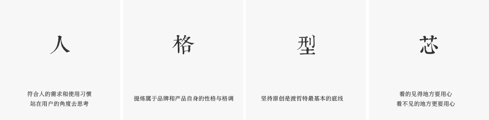

渡哲特科技，为打造拥有信仰的音频类原创自主品牌而诞生的一家研发型企业。
渡哲特科技信仰“人格型芯”的产品铸造理念，自2013年公司成立以来，渡哲特结合信仰建立了完善的音频产品研发及生产品控系统，也成功为国内外各大品牌研发输出了数百计音频产品方案，数百万计产品成功投产上市，但这一切让最初的信仰开始变得模糊，于是渡哲特将这些研发及生产数据进行了分类分析，并根据数据对原有产品研发及生产品控系统进行了深度的优化与重组。
2014年渡哲特科技自主品牌“DZAT渡哲特”应运而生，渡哲特将最初的信仰“人格型芯”彻底融入品牌和产品，设定了信仰自由、信仰风、信仰宙斯为核心的音频产品系列体系，并通过与知名声学团队长达三年的研究，建立了专业的DZAT声学系统。
渡哲特希望不负信仰之名，在未来继续创造让更多的人能感受到信仰的音频产品。

-
2013年10月18
深圳市渡哲特科技有限公司正式成立，初步确定以自主品牌为核心的公司发展方向，耳机为品牌产品的切入点。
-
2013年11月
制定以品牌为目的的公司发展“三步曲”，其中音频产品工业设计、音频产品研发型代工为前期两步核心项目，进军品牌为最终一步。
-
2013年11月
启动第一步音频工业设计项目，并开始相应部署。
-
2014年03月
保持音频产品工业设计项目的同时，启动第二步音频产品研发型代工业务。
-
2014年05月
音频产品工业设计项目宣布结束，半年时间此项目完成上市产品设计输出200+，合作国内外品牌30+，以“人格型芯”为信仰的研发团队日渐成熟。
-
2014年05月
针对音频产品设计项目和研发型代工项目所创造的产品以及服务的品牌，进行了外观、受众人群、国内外用户需求、生产难点等数据的综合分析，启动品牌布局，开始信仰计划。
-
2014年06月
启动自主品牌“信仰自由系列”耳机产品研发，并注册“DZAT渡哲特”品牌商标。
-
2014年08月
信仰自由系列三款产品相继出现研发难点，遭遇坚持信仰和妥协的选择困境。
-
2014年10月18日
年度主题“一份有信仰的诚意之作”。
-
2014年12月
宣布渡哲特音频原创品牌正式面市，在选择坚守信仰的前提下，克服重重困难的信仰自由系列产品DR-05、DR-10相继上市，DR-15产品依旧处于研发攻关中。
-
2015年05月
通过接近一年时间的反复尝试，在承受巨大损失的前提下DR-15决定放弃上市，一度备受质疑与压力。
-
2015年05月
分析DR-15失败原因后，针对研发人员、研发核心方向、研发思维进行了全面的优化，开启了信仰自由系列DR-15产品的替代产品DR-20的研发项目。
-
2015年06月
完善产品质量检测认证体系，产品相应通过国际权威机构检测认证，并自主搭建产品全检测系统。
-
2015年07月
启动信仰风系列产品的部署和研发。
-
2015年09月
信仰自由系列前两款产品的开始展现出初步的影响力，各大媒体相继报道，收到2500万投资意向，但为了坚守信仰委托拒绝。
-
2015年10月
信仰自由系列产品DR-20成功上市，受到国内知名音频媒体评价“中国最有潜力的音频品牌”。
-
2015年10月18日
年度主题“两年，平凡的不平凡，别让信仰成空谈”。
-
2015年11月
淘宝双十一同价位耳机当天全国销量第一。
-
2015年12月
信仰风系列产品DF-10纯木耳机成功众筹上市。
-
2016年03月
根据用户反馈，品牌全部产品进入优化升级阶段。
-
2016年04月
启动信仰宙斯系列产品研发，并暂停研发型代工业务，截止此时，代工高达200万+产品成功上市。
-
2016年05月
完成搭建产品可行性实验室，通过两年的产品实战经验，生产品质部开始日渐成熟。
-
2016年07月
品牌全系产品遭到前所未有的大批量抄袭，启动知识产权维权计划。
-
2016年08月
开始部署全球品牌战略，渡哲特商标在包含欧盟27个成员国以及日本等30个国家进行了注册。
-
2016年09月
信仰宙斯系列产品DT-05正式上市。
-
2016年10月
年度主题“有信仰的偏执狂”，并发布年度主题品牌宣传片。
-
2016年11月
阿里公布大数据统计，渡哲特品牌影响力排名达到13位。
-
2016年12月
完善的研发体系优化完成，产品研发更为苛刻。
-
2017年03月
渡哲特品牌产品使用用户达到50万+。
-
2017年04月
为了再一次提升品质，成立试产小组，全面优化品质问题。
-
2017年05月
信仰宙斯系列产品DT-10获得日本音频协会颁发的HI-RES认证，此认证代表产品具有完整重现高解析音乐的能力。
-
2017年06月
起诉及律师通知40家侵权企业，不惜一切代价维护渡哲特知识产权。